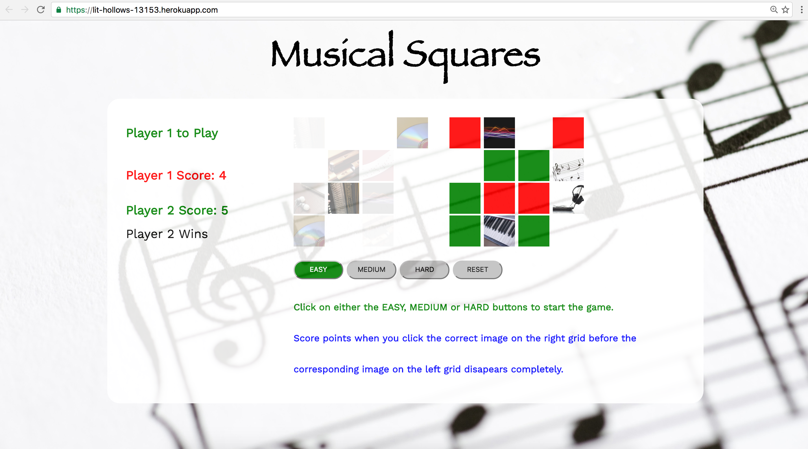
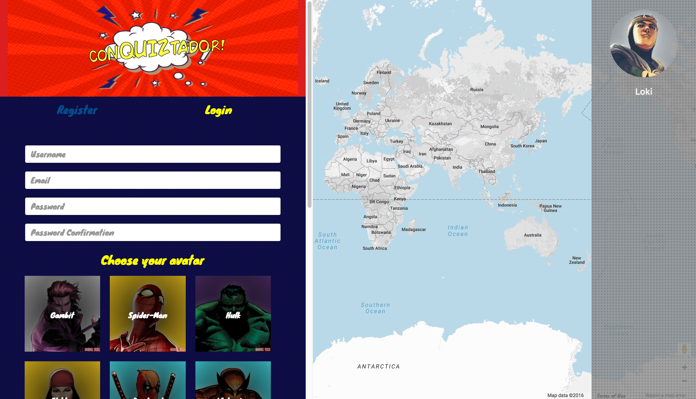
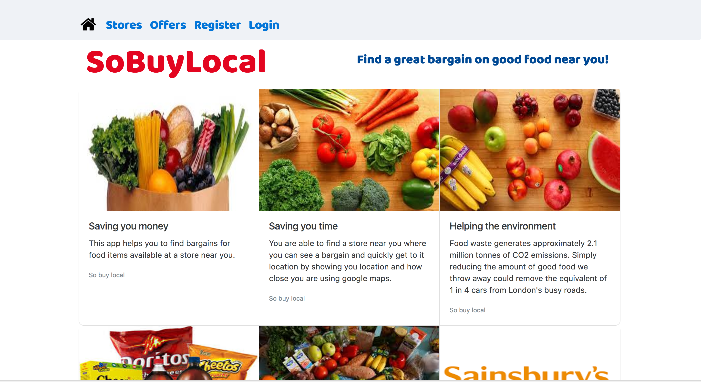

ABOUT ME
John Evans
Web developer, and former systems engineer who loves music and dancing to keep fit.
I have always had a desire and passion to create; hence my decision to complete degrees in Mechanical Engineering and Information Technology. This has allowed me to help develop solutions that have an impact on peoples lives in the physical world. I have over the years learned how to deliver solutions enabled by new and legacy technologies through skills developed in project and programme management. However my passion to create remains and now I am looking for opportunities to help people and support the growth of business through the integration of resources to deliver services enabled by the web. Hence my decision to complete an immersive programme in web development.
PROFESSIONAL EXPERIENCE
Web Developer, General Assembly (Sep 2016 - Jan 2017)
Successful completion of a full-time immersive programme in web development, covering a structured full stack web programming curriculum delivered by industry experts. The programme not only teaches code, but also provides the means to learn approaches to solve problems. Concentrating on the MEAN, RESTful stack, Ruby and Ruby on Rails, working with Agile methodologies.
Accounts Projects and Portfolio Lead, Hewlett Packard Enterprise (Oct 2013 – Jul 2016)
Directed IT change programmes for C-Level account leaders within the Healthcare, Manufacturing and Transport & Distribution sectors, working as an integrator of multiple resources over the full project and programme lifecycle to deliver technology changes to time, cost and quality.
Established strong working relationship with Account, Delivery and Sector Executives to determine programme/project requirements – providing advisory support to client CIO on IT programme delivery matters to meet contractual commitments.
Directed programmes across multiple sectors for £Multi-million, multi-year IT service contracts – meeting commitments to key transformation/change deliverables and milestones for internal and external projects with inputs from third party vendors, while avoiding £Multi-million penalty charges.
Led turnaround of challenging programme; delivering change projects on behalf of £Multi-million contract for a London NHS Trust account. I established an improved project controls and governance process based on PRINCE2, MSP, and elements of AgilePM/Lean 6 Sigma, achieving a 54% improvement in schedule delays and lowered cost overspend by 38%. This approach delivered solutions and upgrades to a 3000 desktop; 24/7/365 operation.
EDUCATION AND KEY QUALIFICATIONS
General Assembly: Web Development Immersive Programme (Sep 2016 - Jan 2017)
London Business School: MBA (Oct 1993 - Jun 1995)
University College London: M.Sc(Eng.) - Information Technology (Oct 1987 - Sep 1988)
University of the WestIndies: B.Sc(Hons.) - Mechanical Engineering (Oct 1977 - Sep 1981)
British Computer Society: Managing Successful Programmes (MSP) - Practioner (Jun 2016 - Jun 2021)
Project Management Institute: Project Management Professional (PMP) (Oct 2010 - Oct 2019)
APMG International: Agile Project Management (AgilePM) - Practioner (Jun 2016)
The Knowledge Academy: Lean Six Sigma - Practioner (Aug 2016)
RELATIVE KEY SKILLS:
Team Player
Experience in leading and performing within a team to rapidly achieve benefits realisation in line with business strategy.
Problem Solver
Ability to assess and implement frameworks to support creative thinking and insights to enable the effective resolution of business issues.
Results Driven
Implemented key business deliverables across £Multi-million, multi-year contracts within complex multi-national organisations.
VOLUNTARY WORK
Trustee at local church, leading activities for children and young people. I really enjoy developing the potential I see in young people and seeing them grow into capable young adults ready to take on new challenges.
KEY INTERESTS
Sci-fi movies; especially those that explore the nature of man’s relationship with machine intelligence such as BladeRunner, West World and Humans.
WEB APPLICATION DEVELOPMENT EXPERIENCE
Here are some of my latest projects completed while at General Assembly.
Click on the images to try the applications out.
MUSICAL SQUARES
An individual project developed using Javascript/JQuery to manage the interaction of randomised audio clips and images, with timers to enable the fading of the images in response to user inputs. The web pages have been built using HTML5/CSS3 for front-end interaction and a php server backend. Github is used to manage application version control while Heroku is used to deploy the solution.
Build elements: Javascript/ jQuery, HTML5/ CSS3/CLI /php/ Git /Heroku /Trello.

This is an interactive two player game that tests a players reaction to visual and audio cues.
CONQUIZTADORS
A team project developing a RESTful game in which a player takes on the role of a Marvel superhero. Trello was used for planning and allocation of key tasks, while the solution has an Express front-end interacting with external APIs from Google and RestCountries.eu. An internal API with country details was also used. The database uses NoSQL Mongo with a NodeJS server on the back-end.
Build components: Express, HTML5, SCSS, NodeJS, Mongo/Mongoose, MVC, RESTful routes, Google API.

This game allows the player to defend the world against evil super villains played by an AI, intent on taking control of the world.
TWITTER4LONDON
A team project developing a RESTful solution using AngularJS front-end to manage user interaction with a mobile interface and consuming external APIs from Twitter and Transport for London. The app authenticates using JasonWebToken with support for OAuth 2.0 for Facebook and GitHub and OAuth 1.0 for Twitter. The backend is enabled via NodeJS, with a Mongo database model for users and user messages.
Build elements: AngularJS, NodeJS, Mongo, TfL and Twitter APIs, JWT/OAuth and Git.

This is a mobile application that provides users with real time updates from Transport for London (TfL) and twitter in a single app on the current user experience on the London underground.
SOBUYLOCAL
An individual project developing a RESTful desktop and mobile app using an AngularJS front-end and Ruby /Ruby on Rails back-end. A SQL database using Postgres has been implemented to manage an internal API created for managing customer/store and product details. Bootstrap was used to rapidly deploy styling updates, while Trello, Balsamiq and Git have employed to support planning of tasks and deployment of the final solution to Heroku.
Build elements: AngularJS, Ruby on Rails, Postgresql, JWT, Bootstrap/CSS3/HTML5.

This is desktop and mobile service providing customers with the means to browse options for categories of food available from stores located near by with a comparison of prices.